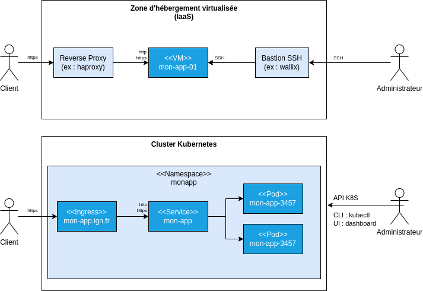

# DevOps avec Kubernetes * Introduction * Principe de fonctionnement * Découvrir Kubernetes par la pratique * Les principaux concepts * Le dashboard Kubernetes * L'orchestration du déploiement * Intérêt de Kubernetes --- ## L'orchestration de conteneurs ### Introduction Il existe plusieurs solutions d'**orchestration de conteneurs** permettant : * L'automatisation de la gestion des conteneurs (ex : redémarrage en cas de problème) * L'automatisation des **déploiements sans interruption**. * La **mise en réseau** des conteneurs pour l'**exécution sur plusieurs hôtes**. * L'automatisation de la **mise à l'échelle**. --- ## Introduction ### Swarm Nous soulignerons l'existence de la solution d'orchestration [swarm](https://docs.docker.com/engine/swarm/) qui est intégrée à docker (1) et qui permettrait par exemple de : * [Créer un cluster avec les machines vagrantbox](https://docs.docker.com/engine/swarm/swarm-tutorial/create-swarm/) * [Déployer GeoStack sous forme d'un service sur ce cluster](https://docs.docker.com/engine/swarm/swarm-tutorial/deploy-service/) > (1) Le développement de swarm a amené l'ajout d'un réseau de type "overlay" permettant la communication des conteneurs entre plusieurs machines (`docker network create --driver overlay geostack`) --- ## Introduction ### Kubernetes Pour ce cours, nous allons plutôt nous concentrer sur **Kubernetes** qui est une référence en matière d'orchestration de conteneurs et qui bénéficie d'un riche écosystème incluant des **solutions de plus haut niveau d'abstraction** ("serverless") qui ne seront pas présentées dans ce cours : * [KNative - Serverless and Event Driven Applications](https://knative.dev/docs/) * [OpenFaaS - Serverless Functions, Made Simple](https://www.openfaas.com/) --- ## Principe de fonctionnement ### L'API de Kubernetes (1/2) Kubernetes met à disposition une [API de contrôle de l'exécution des conteneurs à l'échelle d'un cluster](https://kubernetes.io/docs/concepts/overview/components/) avec : * Une **approche déclarative** où l'utilisateur spécifie les **objets** à créer en YAML (ou JSON) * Des **concepts plus riches et plus nombreux** que l'API docker Nous verrons que **cette API est centrale dans l'écosystème Kubernetes** : * Elle donne un cadre pour **l'authentification** et **la gestion des droits** (RBAC). * Elle permet l'**introspection** et la **réflexion** (découverte de configuration, opérateurs en charge de déployer des applications,...) * Elle est **extensible** (les applications peuvent définir leurs propres types d'objet) --- ## Principe de fonctionnement ### L'API de Kubernetes (2/2) Cette API est centrale pour l'administration d'un cluster Kubernetes. Le client [kubectl](https://kubernetes.io/docs/reference/kubectl/) permettra de communiquer avec elle : <div class="center">  </div> A l'aide des mécanismes de gestion de droit, il sera possible de distinguer les objets gérés par les **administrateurs du cluster** de ceux gérés par les **administrateurs des applications métiers**. --- ## Principe de fonctionnement ### Le plan de contrôle et les noeuds Le **plan de contrôle** (*control-plane*) héberge les composants relatifs à la gestion du cluster dont : * L'API Kubernetes (`kube-apiserver`) * La base de données clé/valeur de l'API (`etcd`) En production, les conteneurs applicatifs s'exécuteront sur des **noeuds** (`nodes`) distinct de ceux hébergeant le plan de contrôle. > Voir [kubernetes.io - Kubernetes Components](https://kubernetes.io/docs/concepts/overview/components/) pour un schéma d'architecture et des explications plus détaillées. --- ## Principe de fonctionnement ### Un modèle réseau ouvert par défaut Avec docker, pour que deux conteneurs puissent communiquer, il faut s'assurer qu'ils partagent le même réseau. Avec Kubernetes, nous aurons : * Un **modèle réseau permettant par défaut la communication au sein du cluster** * La **possibilité de restreindre les communications réseaux** avec un concept dédié que nous ne détaillerons pas dans cette introduction : [NetworkPolicy](https://kubernetes.io/docs/concepts/services-networking/network-policies/). Nous insisterons toutefois sur son importance dans la mesure où **l'utilisation d'un pare-feu classique ne permettra pas de maîtriser finement les flux réseaux** (le pare-feu ne verra que les IP des noeuds, il ne sera pas possible d'établir des règles en fonction des services). > Voir [kubernetes.io - The Kubernetes network model](https://kubernetes.io/docs/concepts/services-networking/#the-kubernetes-network-model) et [youtube.com - Understanding Kubernetes Networking. Part 2: POD Network, CNI, and Flannel CNI Plug-in](https://www.youtube.com/watch?v=U35C0EPSwoY) pour des explications plus détaillées. --- ## Découvrir Kubernetes par la pratique ### Installation du client Pour communiquer avec un cluster, nous installerons le client [kubectl](https://kubernetes.io/fr/docs/tasks/tools/install-kubectl/) qui nous permettra de communiquer avec l'API Kubernetes en ligne de commande. --- ## Découvrir Kubernetes par la pratique ### Création d'un cluster de développement Il existe différents outils permettant d'installer un environnement de développement Kubernetes pour découvrir les concepts par la pratique : * [K3S](https://k3s.io/) de Rancher. * [Kind (Kubernetes in docker)](https://kind.sigs.k8s.io/) (1) * [MicroK8S](https://microk8s.io/) de Canonical (Ubuntu). * [Minikube](https://kubernetes.io/fr/docs/setup/learning-environment/minikube/) Nous traiterons l'**installation de K3S avec Ansible sur les VM vagrantbox** à l'aide du dépôt [mborne/k3s-deploy](https://github.com/mborne/k3s-deploy#k3s-deploy). > (1) L'installation demande moins de travail mais il est plus difficile de comprendre le fonctionnement de Kubernetes et les choses se compliquent pour tester certaines fonctionnalités (LoadBalancer et Ingress en particulier). Voir [mborne/docker-devbox - kind](https://github.com/mborne/docker-devbox/tree/master/kind#readme) après le cours. --- ## Découvrir Kubernetes par la pratique ### Lister les noeuds En premier contact, nous allons nous assurer que `kubectl` est correctement configuré (`export KUBECONFIG=chemin/vers/k3s-deploy/.k3s/k3s.yaml`) et **lister les noeuds** à l'aide des commandes suivantes : ```bash # Information sur le cluster kubectl cluster-info # Lister les noeuds kubectl get nodes ``` --- ## Les principaux concepts ### Les Pods Les [Pods](https://kubernetes.io/docs/concepts/workloads/pods/) sont la plus petite unité d'exécution gérée par Kubernetes. Ils sont porteurs des spécifications pour l'exécution d'un ou plusieurs conteneurs qui partagent sur un même Pod : * Le même réseau (communication en localhost) * Le même stockage (accès aux volumes) Nous traiterons les exemples [mborne/k8s-exemples - Pods](https://github.com/mborne/k8s-exemples#pod) en faisant le lien avec [les exemples de prise en main de docker](https://github.com/mborne/docker-exemples#readme). > Nous ne détaillerons pas les cas d'utilisations des Pod avec plusieurs conteneurs (sidecar, ambassador, adapter) et des conteneurs d'initialisation (disposer d'outils supplémentaires, télécharger des données, retarder le démarrage d'un service,...) --- ## Les principaux concepts ### Les charges de travail (1/2) En pratique, les [Pods](https://kubernetes.io/docs/concepts/workloads/pods/) ne sont pas créés manuellement. Nous définissons plutôt des [charges de travail (*workloads*)](https://kubernetes.io/docs/concepts/workloads/) adaptées à la nature de l'application pour créer les Pods : * Un [Deployment](https://kubernetes.io/docs/concepts/workloads/controllers/deployment/) pour un service sans état (ex : nginx) * Un [StatefulSet](https://kubernetes.io/docs/concepts/workloads/controllers/statefulset/) dans le cas contraire (ex : PostgreSQL) * Un [DaemonSet](https://kubernetes.io/docs/concepts/workloads/controllers/daemonset/) dans le cas où ils doivent s'exécuter sur tous les noeuds (ex : [fluent-bit](https://fluentbit.io/) pour la collecte des logs) Nous traiterons [mborne/k8s-exemples - Création de plusieurs Pod whoami à l'aide d'un Deployment](https://github.com/mborne/k8s-exemples#deployment). --- ## Les principaux concepts ### Les charges de travail (2/2) Nous soulignerons aussi la possibilité de définir : * Des [Job](https://kubernetes.io/docs/concepts/workloads/controllers/job/) pour des **tâches ponctuelles**. * Des [CronJob](https://kubernetes.io/docs/concepts/workloads/controllers/cron-jobs/) pour des **tâches périodiques**. Nous traiterons la [création d'un Job calculant 2000 décimales de PI](https://kubernetes.io/docs/concepts/workloads/controllers/job/). --- ## Les principaux concepts ### Le concept de Service En première approche, un [Service](https://kubernetes.io/docs/concepts/services-networking/service/) pourra être vu comme un reverse proxy devant les Pods. Nous soulignerons qu'il existe plusieurs types de service dont : * `ClusterIP` (type par défaut) rendant le **service accessible dans le cluster** * `LoadBalancer` permettant de demander l'**exposition sur une IP publique**. * `NodePort` permettant l'**exposition via un port sur un noeud (<u>à éviter</u>**) Nous traiterons le cas ClusterIP avec [mborne/k8s-exemples - Création d'un service whoami devant ces Pods](https://github.com/mborne/k8s-exemples#service). --- ## Les principaux concepts ### Le concept de Namespace Les [Namespace](https://kubernetes.io/docs/concepts/overview/working-with-objects/namespaces/) permettent d'isoler les ressources des différentes applications hébergées dans le cluster. Ce concept permettra l'accueil de plusieurs applications dans un même cluster (**Namespace as a service**). Nous traiterons [mborne/k8s-exemples - Namespace](https://github.com/mborne/k8s-exemples#namespace) pour **inspecter les namespaces** existants (dont "default" dans lequel nous travaillons sans le préciser) et verrons **comment créer et utiliser un namespace dédié à une application**. --- ## Les principaux concepts ### Le concept Ingress Le concept [Ingress](https://kubernetes.io/docs/concepts/services-networking/ingress/) permet d'exposer un service en HTTP/HTTPS. Nous noterons que : * L'exposition des ressources [Ingress](https://kubernetes.io/docs/concepts/services-networking/ingress/) sera prise en charge par un contrôleur Ingress (ex : [nginx-ingress-controller](https://github.com/mborne/docker-devbox/blob/master/nginx-ingress-controller/README.md), [Traefik](https://github.com/mborne/docker-devbox/tree/master/traefik#usage-with-kubernetes),...) * Le choix du contrôleur ingress passera par la définition de la propriété `ingressClass` (ex : `nginx`, `traefik`,... avec la possibilité de distinguer `nginx-private` et `nginx-public`) Nous traiterons [mborne/k8s-exemples - Ingress](https://github.com/mborne/k8s-exemples#ingress) où nous verrons comment **installer Traefik en tant que Ingress Controller** et l'**exposer le service whoami sous forme d'une URL**. En pré-requis, nous serons amené à [installer helm](annexe/kubernetes/helm.html) et expliquer brièvement son intérêt. --- ## Les principaux concepts ### La configuration Nous trouverons plusieurs concepts relatif à la [gestion de la configuration](https://kubernetes.io/docs/concepts/configuration/) dont : * [ConfigMap](https://kubernetes.io/docs/concepts/configuration/configmap/) * [Secret](https://kubernetes.io/docs/concepts/configuration/secret/) Ces éléments pourront être convertis en **variables d'environnement** ou monté sous forme de **fichiers** au niveau des conteneurs. --- ## Les principaux concepts ### Les concepts pour le stockage (1/3) Nous noterons que Kubernetes dispose d'un mécanisme de plugin permettant de supporter différentes solutions de stockage (c.f. [kubernetes-csi.github.io - CSI Drivers](https://kubernetes-csi.github.io/docs/drivers.html)) Nous retrouverons le concept de [Volume](https://kubernetes.io/docs/concepts/storage/volumes/) repris à Docker avec une distinction entre : * [Les volumes persistants (PersistentVolume)](https://kubernetes.io/docs/concepts/storage/persistent-volumes/) * [Les volumes éphémères](https://kubernetes.io/docs/concepts/storage/ephemeral-volumes/) (ex : [emptyDir](https://kubernetes.io/docs/concepts/storage/volumes/#emptydir)) --- ## Les principaux concepts ### Les concepts pour le stockage (2/3) Pour le [provisionnement des volumes persistant (PersistentVolume)](https://kubernetes.io/docs/concepts/storage/dynamic-provisioning/), nous trouverons deux concepts intéressants : * Le concept de **PersistentVolumeClaim** correspondant à la **commande d'un volume persistant**. * Le concept de [StorageClass](https://kubernetes.io/docs/concepts/storage/storage-classes/) permettant de répondre avec deux cas de figure : * La création du **PersistentVolume** correspondant par un administrateur du cluster (**provisionnement statique**) * La création automatique du **PersistentVolume** via l'utilisation d'une classe de stockage prévue à cet effet (**provisionnement dynamique**) Il sera intéressant d'exécuter `kubectl get storageclass` pour lister les possibilités dans un cluster. --- ## Les principaux concepts ### Les concepts pour le stockage (3/3) Nous soulignerons que tous les types de stockage n'offrent pas les mêmes possibilités. En particulier, Kubernetes distinguera plusieurs **modes d'accès** dont : * **ReadWriteOnce** (RWO) indiquant que le volume peut être utilisé en lecture/écriture par des **Pods s'exécutant sur un même noeud**. * **ReadWriteMany** (RWX) dans le cas où les **Pods s'exécutent sur plusieurs noeuds**. Ce deuxième mode de stockage ne sera pas souvent disponible en standard. Il faudra par exemple intégrer un **stockage de fichier en réseau (NFS)** (voir [nfs-subdir-external-provisioner](https://github.com/kubernetes-sigs/nfs-subdir-external-provisioner#kubernetes-nfs-subdir-external-provisioner)) ou un **système de stockage distribué** (voir [mborne/docker-devbox - longhorn](https://github.com/mborne/docker-devbox/tree/master/longhorn#longhorn)) En règle générale, il sera **préférable de ne pas avoir recours à un stockage ReadWriteMany** pour des raisons de performance et de coût (mais se libérer de cette contrainte en basculant par exemple sur un stockage S3 pourra demander des efforts de refonte importants des traitements). --- ## Le dashboard Kubernetes Nous remarquerons que l'équipe Kubernetes met à disposition une interface graphique plutôt complète : [Kubernetes Dashboard](https://github.com/kubernetes/dashboard#kubernetes-dashboard). Nous pourrons l'installer à l'aide de [mborne/docker-devbox - kubernetes-dashboard](https://github.com/mborne/docker-devbox/blob/master/kubernetes-dashboard/README.md#kubernetes-dashboard) et inspecter [les fichiers YAML correspondant à ce déploiement](https://raw.githubusercontent.com/kubernetes/dashboard/v2.7.0/aio/deploy/recommended.yaml) pour survoler des concepts non abordés jusqu'ici (ServiceAccount, RBAC,...). --- ## L'observabilité Pour découvrir l'observabilité avec Kubernetes, nous pourrons nous appuyer sur [github.com - mborne/docker-devbox](https://github.com/mborne/docker-devbox) pour installer : * [Prometheus](https://github.com/mborne/docker-devbox/tree/master/prometheus#usage-with-kubernetes) pour collecter des métriques système. * [Loki](https://github.com/mborne/docker-devbox/tree/master/loki#usage-with-kubernetes) pour collecter les journaux applicatifs. * [Grafana](https://github.com/mborne/docker-devbox/tree/master/grafana#usage-with-kubernetes) pour disposer d'une interface graphique de consultations des journaux et des métriques. Nous remarquerons au passage que Grafana permet de gérer les dashboards as code ( [docker-devbox - grafana/helm/values.yaml](https://github.com/mborne/docker-devbox/blob/master/grafana/helm/values.yaml) ). --- ## L'orchestration du déploiement ### Exemple avec ArgoCD Afin d'avoir un aperçu de l'utilisation d'un orchestrateur de déploiement utilisant une approche GitOps, nous installerons [ArgoCD à l'aide de mborne/docker-devbox - argocd](https://github.com/mborne/docker-devbox/tree/master/argocd#argo-cd). Nous reprendrons le déploiement de whoami à l'aide de ArgoCD. --- ## Que manque-t'il à ce stade? ### Kubernetes n'est pas une solution clé en main A ce stade, nous soulignerons que **Kubernetes n'est pas une solution offrant une zone d'hébergement clé en main**. Il faut **déployer et configurer des services techniques** (ex : Ingress Controller, Prometheus, Grafana...). Nous pourrions **limiter les efforts avec des distributions plus riches** (ex : Rancher, VMWare Tanzu,...) ou en ayant recours à **Kubernetes en mode SaaS** (Managed Kubernetes Service chez OVH, Google Kubernetes Engine,...) --- ## Que manque-t'il à ce stade? ### Sécuriser l'exécution des conteneurs n'est pas trivial Pour sécuriser l'exécution des conteneurs, il nous resterait par exemple à configurer des options de sécurité suivantes sur les conteneurs : ```yaml securityContext: allowPrivilegeEscalation: false privileged: false runAsUser: 1000 runAsNonRoot: true capabilities: drop: - ALL seccompProfile: type: RuntimeDefault ``` Or, l'activation de ces options n'est pas indolore : * Il convient de **gérer proprement les droits sur les fichiers dans le conteneur**. * Il convient de **ne pas utiliser des ports privilégiés tels le port 80**. --- ## Que manque-t'il à ce stade? ### Éviter les problèmes de cohabitation n'est pas trivial Il est nécessaire de [spécifier les réservations et limites RAM et CPU des conteneurs](https://kubernetes.io/docs/concepts/configuration/manage-resources-containers/#example-1) pour : * Permettre la mise en oeuvre de quotas ou de l'autoscalling sur les noeuds. * Éviter qu'un service rencontre un OEMKill ou consomme toutes les ressources CPU et RAM d'un noeud. Il est aussi nécessaire de s'assurer qu'un Pod ne provoque pas un full sur un noeud par exemple en : * Mettant en oeuvre des quotas sur le stockage local. * Imposant la déclaration de volumes pour le stockage (`readOnlyRootFilesystem: true`) pour pouvoir mettre en oeuvre ces quotas. Ceci induira qu'**il faudra une bonne maîtrise de la consommation RAM et de la rigueur sur la gestion des données** pour atteindre un haut niveau de stabilité. --- ## Que manque-t'il à ce stade? ### Kubernetes n'est pas la solution à tous les problèmes Il convient aussi de noter que : * **Déployer et maintenir des applications "Stateful"** telles des bases de données **en environnement Kubernetes n'est pas trivial** et demande une **maîtrise du stockage**. * **Kubernetes est une solution bas niveau** qui sera **moins efficace qu'une offre PaaS ou SaaS pour déployer certaines applications** (ex : CMS). Nous prendrons à ce titre prendre un peu de recul dans la partie [DevOps dans le cloud](cloud.html) et aborder la possibilité d'hybrider les solutions.